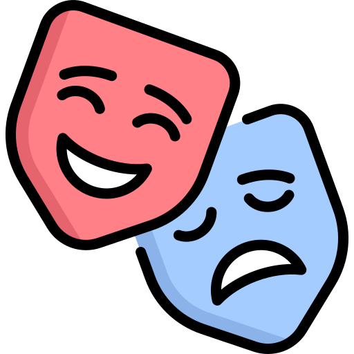

Mes centres d'intérêts
Bureau des Étudiants

En 2024-2025, plusieurs camarades et moi-même avons pris la responsabilité du BDE du BUT Informatique. Dès notre élection, nous avons organisé une après-midi jeux vidéos et un concours de logo. À la rentrée, nous avons participé à l'encadrement d'un week-end d'intégration dans le Var. Nous avons aussi organisé un laser-game avec parties illimitées. Une vente de pulls de promo est en préparation, ainsi qu'une soirée jeux de société.
Théâtre
À l'école primaire, j'organisais des spectacles dans la cour pour faire rire mes camarades. Par la suite, j'ai participé à des comédies musicales avec mon club de danse. Trois fois depuis 2015, j'ai joué et monté à cheval dans des pièces de théâtre équestre. Pendant un an, en 2022, j'ai intégré une association de théâtre de l'université. Avec cinq autres personnes, nous avons répété On ne badine pas avec l'amour d'Alfred de Musset. Nous n'avons pas eu l'occasion de la jouer, mais les répétitions furent des moments très agréables.
Lecture

Je lis beaucoup. Au petit déjeuner, à la pause de midi, après avoir travaillé, avant de me coucher, au lieu de dormir. J'aime changer de genre de lecture, mais j'ai une préférence pour la heroic fantasy (L'Assassin Royal de Robin Hobb a dernièrement conquis mon cœur et mon esprit). Les pièces de théâtre sont aussi des lectures qui me plaisent. Elles ont une manière différente de provoquer des émotions, et elles sont pensées pour donner des images au lecteur (qui pourrait en être le metteur en scène...). Wajdi Mouawad et sa pièce Incendies sont pour l'instant mes chouchous.
Équitation

Je monte à cheval depuis que j'ai 8 ans. Il ne s'agit pas d'équitation pour la compétition : ce qui compte dans mon centre-équestre, c'est d'apprendre à monter bien, en respectant son cheval. Nous apprenons à apprendre les bons mouvements à nos chevaux, en les répétant semaine après semaine. C'est un travail patient, lent, parfois accompagné d'une chute lorsqu'un lézard bouge dans un buisson. Ce qui compte, c'est de remonter après.